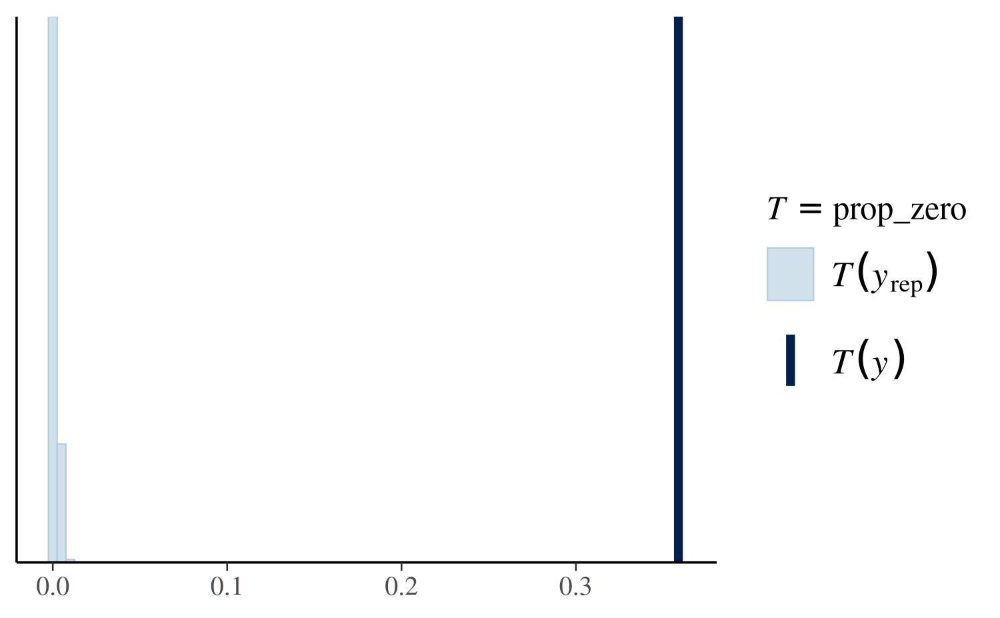
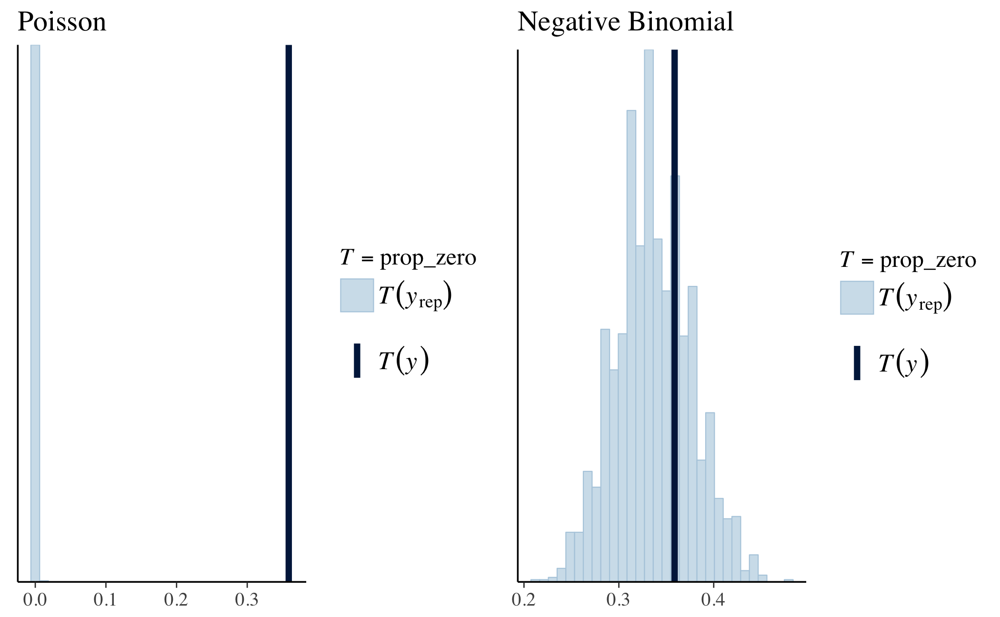

This vignette explains how to estimate generalized linear models (GLMs) for count data using the stan_glm function in the rstanarm package.
The four steps of a Bayesian analysis are
Steps 3 and 4 are covered in more depth by the vignette entitled “How to Use the rstanarm Package”. This vignette focuses on Step 1 for Poisson and negative binomial regression models using the stan_glm function.
If the outcome for a single observation \(y\) is assumed to follow a Poisson distribution, the likelihood for one observation can be written as a conditionally Poisson PMF
\[\tfrac{1}{y!} \lambda^y e^{-\lambda},\]
where \(\lambda = E(y | \mathbf{x}) = g^{-1}(\eta)\) and \(\eta = \alpha + \mathbf{x}^\top \boldsymbol{\beta}\) is a linear predictor. For the Poisson distribution it is also true that \(\lambda = Var(y | \mathbf{x})\), i.e. the mean and variance are both \(\lambda\). Later in this vignette we also show how to estimate a negative binomial regression, which relaxes this assumption of equal conditional mean and variance of \(y\).
Because the rate parameter \(\lambda\) must be positive, for a Poisson GLM the link function \(g\) maps between the positive real numbers \(\mathbb{R}^+\) (the support of \(\lambda\)) and the set of all real numbers \(\mathbb{R}\). When applied to a linear predictor \(\eta\) with values in \(\mathbb{R}\), the inverse link function \(g^{-1}(\eta)\) therefore returns a positve real number.
Although other link functions are possible, the canonical link function for a Poisson GLM is the log link \(g(x) = \ln{(x)}\). With the log link, the inverse link function is simply the exponential function and the likelihood for a single observation becomes
\[\frac{g^{-1}(\eta)^y}{y!} e^{-g^{-1}(\eta)} = \frac{e^{\eta y}}{y!} e^{-e^\eta}.\]
A full Bayesian analysis requires specifying prior distributions \(f(\alpha)\) and \(f(\boldsymbol{\beta})\) for the intercept and vector of regression coefficients. When using stan_glm, these distributions can be set using the prior_intercept and prior arguments. The stan_glm function supports a variety of prior distributions, which are explained in the rstanarm documentation (help(priors, package = 'rstanarm')).
As an example, suppose we have \(K\) predictors and believe — prior to seeing the data — that \(\alpha, \beta_1, \dots, \beta_K\) are as likely to be positive as they are to be negative, but are highly unlikely to be far from zero. These beliefs can be represented by normal distributions with mean zero and a small scale (standard deviation). To give \(\alpha\) and each of the \(\beta\)s this prior (with a scale of 1, say), in the call to stan_glm we would include the arguments prior_intercept = normal(0,1) and prior = normal(0,1).
If, on the other hand, we have less a priori confidence that the parameters will be close to zero then we could use a larger scale for the normal distribution and/or a distribution with heavier tails than the normal like the Student t distribution. Step 1 in the “How to Use the rstanarm Package” vignette discusses one such example.
With independent prior distributions, the joint posterior distribution for \(\alpha\) and \(\boldsymbol{\beta}\) in the Poisson model is proportional to the product of the priors and the \(N\) likelihood contributions:
\[f\left(\alpha,\boldsymbol{\beta} | \mathbf{y},\mathbf{X}\right) \propto f\left(\alpha\right) \times \prod_{k=1}^K f\left(\beta_k\right) \times \prod_{i=1}^N { \frac{g^{-1}(\eta_i)^{y_i}}{y_i!} e^{-g^{-1}(\eta_i)}}.\]
This is posterior distribution that stan_glm will draw from when using MCMC.
This example comes from Chapter 8.3 of Gelman and Hill (2007).
We want to make inferences about the efficacy of a certain pest management system at reducing the number of roaches in urban apartments. Here is how Gelman and Hill describe the experiment (pg. 161):
[…] the treatment and control were applied to 160 and 104 apartments, respectively, and the outcome measurement \(y_i\) in each apartment \(i\) was the number of roaches caught in a set of traps. Different apartments had traps for different numbers of days […]
In addition to an intercept, the regression predictors for the model are the pre-treatment number of roaches roach1, the treatment indicator treatment, and a variable indicating whether the apartment is in a building restricted to elderly residents senior. Because the number of days for which the roach traps were used is not the same for all apartments in the sample, we include it as an exposure, which slightly changes the model described in the Likelihood section above in that the rate parameter \(\lambda_i = exp(\eta_i)\) is multiplied by the exposure \(u_i\) giving us \(y_i \sim Poisson(u_i \lambda_i)\). This is equivalent to adding \(\ln{(u_i)}\) to the linear predictor \(\eta_i\) and it can be specified using the offset argument to stan_glm.
library(rstanarm)
data(roaches)
# Rescale
roaches$roach1 <- roaches$roach1 / 100
# Estimate original model
glm1 <- glm(y ~ roach1 + treatment + senior, offset = log(exposure2),
data = roaches, family = poisson)
# Estimate Bayesian version with stan_glm
stan_glm1 <- stan_glm(y ~ roach1 + treatment + senior, offset = log(exposure2),
data = roaches, family = poisson,
prior = normal(0,2.5), prior_intercept = normal(0,5),
chains = CHAINS, cores = CORES, seed = SEED)The formula, data, family, and offset arguments to stan_glm can be specified in exactly the same way as for glm. The poisson family function defaults to using the log link, but to write code readable to someone not familiar with the defaults we should be explicit and use family = poisson(link = "log").
We’ve also specified some optional arguments. The chains argument controls how many Markov chains are executed, the cores argument controls the number of cores utilized by the computer when fitting the model. We also provided a seed so that we have the option to deterministically reproduce these results at any time. The stan_glm function has many other optional arguments that allow for more user control over the way estimation is performed. The documentation for stan_glm has more information about these controls as well as other topics related to GLM estimation.
Here are the point estimates and uncertainties from the glm fit and stan_glm fit, which we see are nearly identical:
round(rbind(glm = coef(glm1), stan_glm = coef(stan_glm1)), digits = 2) (Intercept) roach1 treatment senior
glm 3.09 0.7 -0.52 -0.38
stan_glm 3.09 0.7 -0.52 -0.38round(rbind(glm = summary(glm1)$coefficients[, "Std. Error"],
stan_glm = se(stan_glm1)), digits = 3) (Intercept) roach1 treatment senior
glm 0.021 0.009 0.025 0.033
stan_glm 0.021 0.008 0.024 0.034(Note: the dataset we have is slightly different from the one used in Gelman and Hill (2007), which leads to slightly different parameter estimates than those shown in the book even when copying the glm call verbatim. Also, we have rescaled the roach1 predictor. For the purposes of this example, the actual estimates are less important than the process.)
Gelman and Hill next show how to compare the observed data to replicated datasets from the model to check the quality of the fit. Here we don’t show the original code used by Gelman and Hill because it’s many lines, requiring several loops and some care to get the matrix multiplications right (see pg. 161-162). On the other hand, the rstanarm package makes this easy. We can generate replicated datasets with a single line of code using the posterior_predict function:
yrep <- posterior_predict(stan_glm1)By default posterior_predict will generate a dataset for each set of parameter draws from the posterior distribution. That is, yrep will be an \(S \times N\) matrix, where \(S\) is the size of the posterior sample and \(N\) is the number of data points. Each row of yrep represents a full dataset generated from the posterior predictive distribution. For more about the importance of the posterior_predict function, see the “How to Use the rstanarm Package” vignette.
Gelman and Hill take the simulated datasets and for each of them compute the proportion of zeros and compare to the observed proportion in the original data. We can do this easily using the pp_check function, which generates graphical comparisons of the data y and replicated datasets yrep.
prop_zero <- function(y) mean(y == 0)
(prop_zero_test1 <- pp_check(stan_glm1, plotfun = "stat", stat = "prop_zero"))
The value of the test statistic (in this case the proportion of zeros) computed from the sample y is the dark blue vertical line. More than 30% of these observations are zeros, whereas the replicated datasets all contain less than 1% zeros. This is a sign that we should consider a model that more accurately accounts for the large proportion of zeros in the data. Gelman and Hill show how we can do this using an overdispered Poisson regression. To illustrate the use of a different stan_glm model, here we will instead try negative binomial regression, which is also used for overdispersed or zero-inflated count data. The negative binomial distribution allows the (conditional) mean and variance of \(y\) to differ unlike the Poisson distribution. To fit the negative binomial model can either use the stan_glm.nb function or, equivalently, change the family we specify in the call to stan_glm to neg_binomial_2 instead of poisson. To do the latter we can just use update:
stan_glm2 <- update(stan_glm1, family = neg_binomial_2) We now use pp_check again, this time to check the proportion of zeros in the replicated datasets under the negative binomial model:
if (require(gridExtra)) {
prop_zero_test2 <- pp_check(stan_glm2, plotfun = "stat", stat = "prop_zero")
# Show graphs for Poisson and negative binomial side by side
grid.arrange(prop_zero_test1 + ggtitle("Poisson"),
prop_zero_test2 + ggtitle("Negative Binomial"),
ncol = 2)
}
This is a much better fit, as the proportion of zeros in the data falls nicely near the center of the distribution of the proportion of zeros among the replicated datasets. The observed proportion of zeros is quite plausible under this model.
We could have also made these plots manually without using the pp_check function because we have the yrep datasets created by posterior_predict. The pp_check function takes care of this for us, but yrep can be used directly to carry out other posterior predictive checks that aren’t automated by pp_check.
When we comparing the models using the loo package we also see a clear preference for the negative binomial model
loo1 <- loo(stan_glm1)
loo2 <- loo(stan_glm2)
compare_models(loo1, loo2)
Model comparison:
(negative 'elpd_diff' favors 1st model, positive favors 2nd)
elpd_diff se
5344.8 707.3 which is not surprising given the better fit we’ve already observed from the posterior predictive checks.